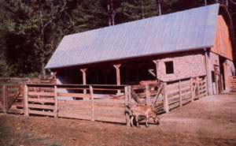

Mother's Stackwood Barn
Here's our design for a farmstead outbuilding that can handled a whole slew of duties, including the structure, diagram andconstruction advice for building this cordwood construction barn.
By the Mother Earth News staff
November/December 1981
As a part of the development of MOTHER'S Eco-Village research center, we began-in the spring of 1981-to gather a small collection of homestead animals. For the most part, the critters are either allowed to roam or are tethered (or fenced) for pasturing in whatever field has reached the appropriate stage of growth. (Our pigs, for example, have spent most of the past summer in the woods, while the sheep and our new cow have been moved around from one pasture to another.)
But when the air grows chill, animals (like people) need protection, and-even in our fairly mild North Carolina climate-a shelter is a necessity for anyone who's keeping livestock. Fortunately for limited operations such as ours, though, a barn can do more than simply serve as an animal house, and the combination postand-beam and stackwood structure we've recently put the finishing touches to is (we think) a good example of do-it-outbuilding design.
MULTIPURPOSE
When we began to sketch out what use we hoped to get out of our barn, we had to face the fact that we'd likely never dedicate the entire structure to the care of one kind of livestock . . . nor would we be storing just one variety of feed. And true to our projections-the new barn has already housed critters ranging from horses to rabbits . . . is now serving as a milkprocessing center ... and holds hay, wheat, buckwheat, anal straw in its loft. Consequently, you should probably consider our multipleduty floor plan as a general example of barn use. Folks who decide to employ the basic construction techniques that we'll outline here may want to arrange their own layouts to suit their particular needs . . . based on the ample footings we've included in our design.
THE STRUCTURE
At 32' X 45', our barn is larger than the average outbuilding but considerably smaller than a full-scale dairy barn. Furthermore, the structure's 10"-deep, 24"-wide footings offer the possibility of dividing the ground floor into stalls as small as 10' X 10', but the interior could easily be left more open (though the posts, which are an integral part of the loadbearing structure, must be positioned as shown).
The 45-foot back wall and one 32-foot end wall are earth-bermed and were erected from 12" concrete block, mor tared and stacked to a height of 10 feet. To withstand the pressure of backfilling a core of every second block was reinforced with two lengths of No. 4 rebar and filled w ith concrete. Before the backhoe pushed the earth against the walls, we tarred the exterior of the block surface, and laid on 15-pound felt and 4-mil polyethylene. In addition, we placed 4"diameter plastic drain tile ( over a 4"thick bed of gravel) against the footers, and poured another 8" of rock atop the ABS pipe to prevent it from plugging with mud.
Both 3 X 8 and 8 X 6 posts (roughsawed from oak, hem pine, and white pine) make up the second-story support framework, and angle braces are used to connect the posts to concrete block stands built up from the footers. The connecting beams are also 6 X 6 roughsawed timbers, and are supported by both the 6 X 6 posts and the 3 X 6's that brace the gates. The beams are tied to the posts with 1/4" X 6" X 18" steel plates and 1/2" bolts . . . as well as by bolted 3 X 6 diagonal beams. Longer 3 X 6 diagonals also span the boxed-in sections at the open end of the building to add strength.
We built sills on the 6 X 8 beams by nailing two 2 X 8's together, and then toenailing the doubled boards-on edge-on top of the timbers. A pressure-treated 2 X 8 sill was then tied to the crest of the block wall to level things up for the addition of 2 X 8 floor joists on 16-inch centers.
Laying down the rough-cut 1" flooring on the framework presented quite a challenge, since few of the boards were of the same width. To insure that the spacing would work out correctly, our crew started laying the lumber in the center of the floor, and worked to the edges (across the 32-foot dimension). After every two feet of outward progress, they dropped a chalk line along the 45-foot dimension and ripped along the entire length to even up the irregularities in width.
In order to get the greatest possible use from the loft, we decided to build the roof as a free span . . . thereby eliminating the need for space-stealing, interior roofsupporting posts. The 2 X 8 rafters were tied into the flooring and sills with spikes, and plates were wedged between them to provide additional support. Th,span itself is a self-supporting angle. arch that consists of a 12-in-10 pitch proceeding from the floor, and a 3-in-12 pity finishing to the roof peak. A vent runs the length of the peak to help keep the lot from overheating or retaining too must moisture. The roofing material is galva nized metal, laid on 1 X 4's running per pendicular to the rafters. The result is truly spacious loft that measures t3 feet ! at its highest point.
FINISHING TOUCHES
We closed in the end the loft with standard framing on 24-inch centers, us ing 24" purlins. Then the same 1" rough cut lumber that made up the flooring was applied to the framing as siding. Generous double doors are centered in each end, but-as a result of the earth berming-one loft door is at ground level (to make bringing hay, or whatever, into the upper level an easier task), while the other is at second-story height (to face hate loading the contents of the loft into truck or wagon). We also placed a 16" X 72" tapered gable-end vent above ear pair of doors, to further assure proper ventilation of the space. To ease the job of getting feed down stairs to our barn's hungry clientele 29" X 30" trapdoor was cut into one corner of the loft floor, and the appropriate criples were then added from below. While bales of hay can be simply dropped through the opening, a ladder allows bipeds to climb down into (or up out the feed room below the loft.
The walls of the feed storage room and the milk room (as well as the partitions between stalls) are formed from stack wood set between the post-and-bea framing. The logs for the cordwood partitions were cut to 12" lengths at the sit and then carefully mortared into th spaces between the timbers. Our star wood walls are (we think) very attractive, and there's no question that building them was inexpensive.
THE PRICE TAG
About 5,000 board feet of lumber wet into our barn, but we were able to obtain 3,800 feet of it from trees that had to be cut to make room for the structure. Thus we managed to get the bulk of our lumber at $75 per 1,000 board feet, the cutting fee charged by a local sawmill.
All told, we invested $8,200 in the materials and backhoe work for the Eco-Village's stackwood barn (or about $3.00 per square foot), and the building is proving to be a favorite of visitors an staff alike! !
The Cordwood Barn Plan, number 761, is available online or by calling 800-234-3368.
|
 |
|
|
|
|
|
 |
|
|
|
|